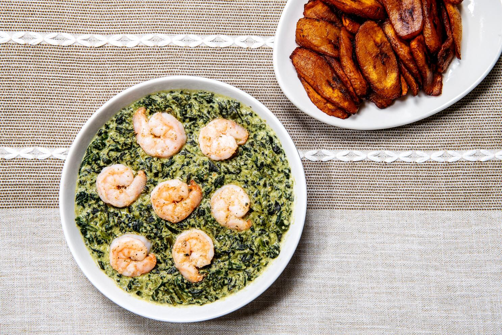

Ndolé is a Cameroonian dish consisting of stewed nuts(locally called groundnut), ndoleh(bitter leaves indigenous to West and Central Africa), and fish or beef and some crayfish.
The dish may also contain shrimp. It is traditionally eaten with plantains, bobolo, miondo, gari, and rice.